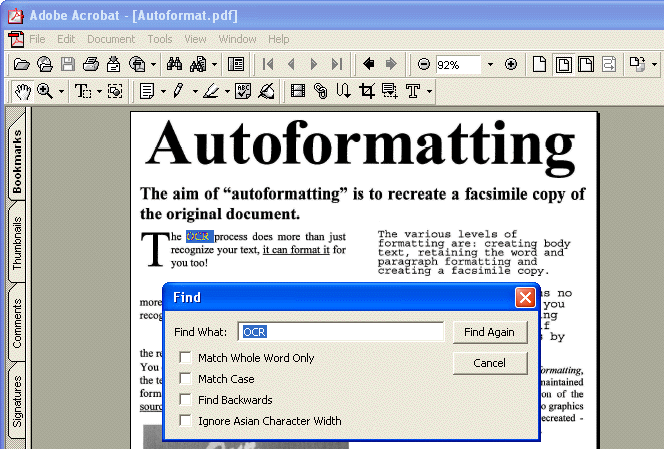

Tweet
Tweet
Whether your OCR software reformats the recognized text or not is up to the user. You can perform OCR because you just need the text, in which case you will edit and format it yourself, and you can recreate the source document, including its formatting.
The various levels of formatting can depend somewhat on your OCR software, but you roughly get the following options: creating body text, retaining word and paragraph formatting and creating a facsimile copy. (You can certainly guess that each OCR company names these formatting levels differently...)
Creating body text means no formatting is applied: you get a continuous, “running” text. All formatting, if any, is done afterwards by the user.
If you retain word and paragraph formatting, the font type (fixed-proportional, serif-sans serif, normal-condensed), size and typestyle (bold, italic, underlined, subscript and superscript) are maintained across the recognition. (Recreating the types subscript and superscript is interesting when you recapture scientific literature: the chemical description “H2O” remains exactly that, it does not become “H2O”.)
The justification of the paragraphs (left, centered, right and justified) is detected. Bulleted and numbered lists get recreated. The graphics and tables are recreated (including the cell borders) but the columns are not: the paragraphs just follow each other etc.
True “autoformatting” recreates a facsimile copy of the original document: the text, (bitonal, greyscale or color) graphic and table blocks are recreated in the same place. The font type, size and typestyle are maintained across the recognition. As a result, you get a true copy of your source document, be it a compact and editable text file, no longer a scanned image of your document! (Notice the “drop letter” in the first column...)
With state-of-the-art OCR, “autoformatting” can be done in two ways: the text blocks, tables and graphics can be stored in frames or in “flowing” columns (if applicable).
With frames, modifying text is not that easy: the frames won’t adjust their position when the text is modified. Columnized text is definitely editable: the logical flow of document text is reflected in the output as the text “flows” naturally from one column to the next. Change the dimensions of a column for instance and your text adjusts itself automatically!
Advanced OCR solutions will even have the columns flow naturally around an “irregular” graphic: the text flow is ensured when a (polygonal) graphic “eats into” your columns! It doesn’t matter how much you edit the recognized document: add or remove text in any column and the text steers clear of the (complex) graphic in all cases... (Remember the umbrella man that constituted a challenge to our page decomposition? You can get actual, editable columns with the graphic inserted as recognition result.)
Sophisticated OCR offers extra options to recreate the source documents: you can retain the colors of the text, retain the colors of the background and you can add the scanned image as page background to the recognized document. Does that sound heavy? Let’s take things one step at a time then…
When you retain the colors of the text, you maintain the original colors of the text across the recognition. A red title will be red in your Word document, blue text in a frame shows up as blue in your HTML file etc. Think united colors of Bennetton!
Retaining the colors of the background maintains the spot colors of the page background across the recognition. Think of text printed on a colored background, text printed in colored frame that stands apart from the other columns etc.
Or think of tables with colored cells: this option maintains the background color of each cell!
Finally, you can add the scanned image as page background under the recognized text. You can compare it to a “text-image” PDF file, only this time it’s a Word or HTML document, for instance…
This formatting option involves sophisticated routines. The pixels of the recognized text are erased from the scanned image to create a legible document. Displaying recognized text in, say, black on top of black character bitmaps would give you text with a heavy shadow…
State-of-the-art OCR packages also support Adobe Acrobat PDF output, and when you’re using that format, you can take all this even further: you autoformat the recognized text and store it alongside the scanned page. The scanned image is placed above the autoformatted text in a two-layered file! (It may seem a bit strange at first: when you execute a text search inside such an “image-text” PDF file, you enter a word as search term and the system highlights the images of the word matches.)

All this leads to an interesting conclusion: OCR isn’t just character recognition anymore, it has become comprehensive page or document recognition!
And the capability to retain the page format is certainly appreciated by the OCR users: in most reviews of OCR software, you’ll find information on the capability of the software to recreate the layout of the scanned documents. In OCR benchmarks, the degree of success with which the source documents get recreated often features as large as the recognition accuracy…!
Going places with the recognized text — More about Adobe Acrobat PDF output — Does OCR software format the text? — Does OCR software recognize tables? — Converting document collections
Home page — Intro — Scanners — Images — History — OCR — Languages — Accuracy — Output — BCR — Pen scanners — Sitemap — Search — Feedback – Contact